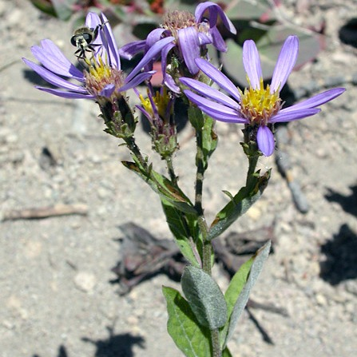
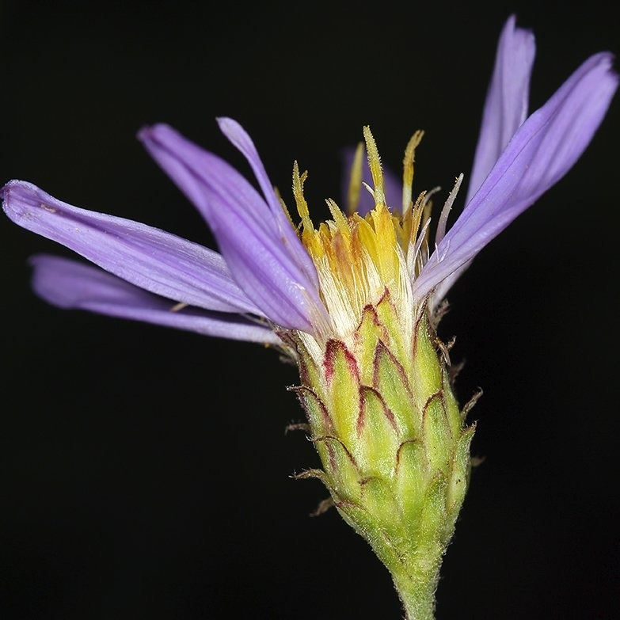
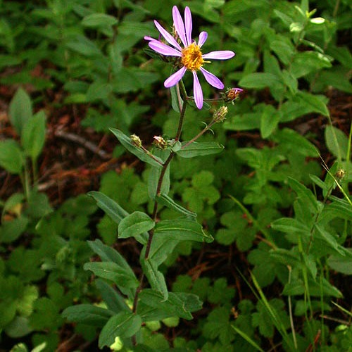

Doellingeria ledophylla
- Common name
- Cascade Aster
- Family
- Asteraceae
- Family common name
- Sunflowers, Daisies, Asters, and Allies Family
- Blooms
- June - September
- Habitat
- Meadows, open woods in westside forests, subalpine.
- Recognition
- Erect clump of hairy stems rise from woody base. Leaves elliptical to almost round, tips pointed to round, entire, sessile, upper surface shiny, underside pale green with matted hairs. Lower leaves scale-like, middle and upper leaves equal in length. Flowers have few to 21 ray flowers, in cup of oblong green bracts with sometimes purple reflexed tips.
Range Map
OR Flora